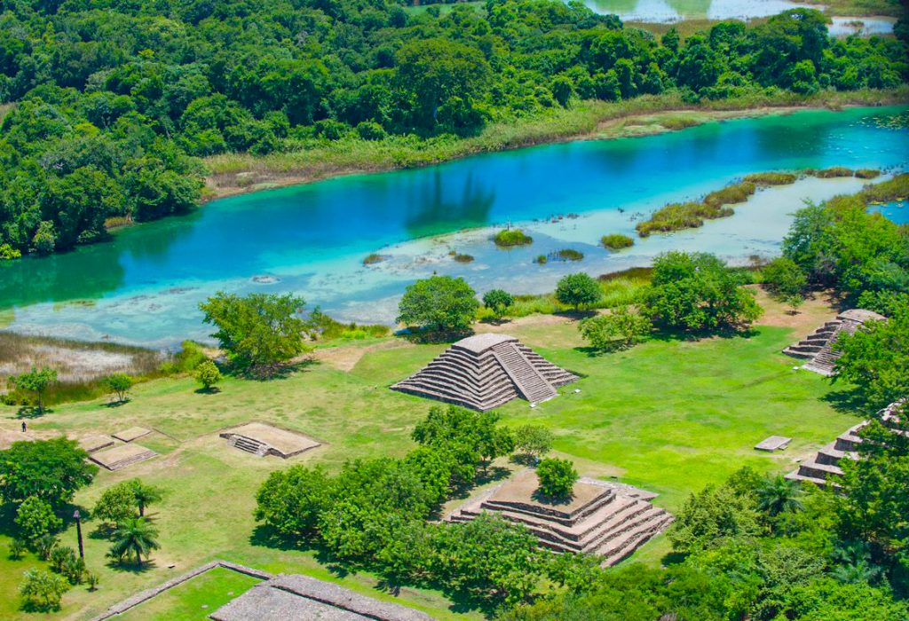

Historia
En el municipio y la cabecera municipal hubo antiguos asentamientos prehispánicos. En los años de la conquista, soldados de Pedro Portacarrero
llegaron a los llanos de Zapaluta (antiguo nombre de la comarca que era La Trinitaria), pero fueron detenidos por Mazariegos. En 1821, Zapaluta
y Comitán proclamaron la independencia de Chiapas, como consta en el acta respectiva. En 1911, el gobernador Flavio Guillén decreta oficialmente
el nombre de La Trinitaria para este municipio, el cual guarda celosamente entre sus joyas turísticas las grutas de San Francisco,
la impresionante cima y los Lagos de Montebello, de excitantes colores. Desde hace mucho tiempo La Trinitaria ha sido la aduana fronteriza de Comitán.
La Santísima Trinidad de Zapaluta se fundó entre 1596 y 1615 y fue administrada por Comitan. la Trinitaria es el nombre actual de Zapaluta
(significa: Camino de enanos)En 1774, Zapaluta fue un anexo del pueblo de Comitán dentro de la Provincia de Llanos. De 1855 a 1863, en sucedió
el movimiento orteguista que pretendió la segregación de Chiapas de México y la derogación de las leyes de reforma acción, pero no tuvo éxito.
En 1860 se fusiló en la finca Juncaná al expresidente colombiano José María Melo, que pretendió unirse al movimiento. El 27 de septiembre de 1882,
México y Guatemala definieron las colindancias y superficie del municipio. El 11 de diciembre de 1882, Zapatula se convirtió brevemente en municipio.
En 1883 fue otra vez parte de Comitán y se dividió en 12 departamentos. En 1915 se convirtió permanentemente en un municipio. En el municipio
y la cabecera municipal hubo antiguos asentamientos prehispánicos. En los años de la conquista, soldados de Pedro Portacarrero llegaron
a los llanos de Zapaluta (antiguo nombre de la comarca que era La Trinitaria), pero fueron detenidos por Mazariegos. En 1821, Zapaluta y
Comitán proclamaron la independencia de Chiapas, como consta en el acta respectiva. En 1911, el gobernador Flavio Guillén decreta oficialmente
el nombre de La Trinitaria para este municipio, el cual guarda celosamente entre sus joyas turísticas las grutas de San Francisco, la impresionante
cima y los Lagos de Montebello, de excitantes colores. Desde hace mucho tiempo La Trinitaria ha sido la aduana fronteriza de Comitán.
La Santísima Trinidad de Zapaluta se fundó entre 1596 y 1615 y fue administrada por Comitan. la Trinitaria es el
nombre actual de Zapaluta (significa: Camino de enanos)
En 1774, Zapaluta fue un anexo del pueblo de Comitán dentro de la Provincia de Llanos. De 1855 a 1863,
en sucedió el movimiento orteguista que pretendió la segregación de Chiapas de México y la derogación de las leyes de reforma acción, pero no tuvo éxito.
En 1860 se fusiló en la finca Juncaná al expresidente colombiano José María Melo, que pretendió unirse al movimiento. El 27 de septiembre de 1882, México y Guatemala
definieron las colindancias y superficie del municipio. El 11 de diciembre de 1882, Zapatula se convirtió brevemente en municipio.
En 1883 fue otra vez parte de Comitán y se dividió en 12 departamentos. En 1915 se convirtió permanentemente en un municipio.
Reseña Previa de la Trinitaria
La Trinitaria (antes Zapaluta), municipio ubicado sureste de México, perteneciente al mágico estado de Chiapas,
reconocido por sus atractivos naturales, históricos y arqueológicos, entre ellos destacan: El Parque Nacional Lagunas de Montebello;
Lagos de Colón, Museo Parador Santa María, ex-convento San José Coneta, la Parroquia de la Santísima Trinidad,
las ruinas de la ciudad precolombina de Chinkultic en la zona fría, y en la zona cálida las ruinas del Lagartero, entre otros.
Un lugar lleno de historia, cultura y tradiciones, sus habitantes (Los Zapalutecos, Caramelos o Trinitarenses),
son amables, generosos y respetuosos, destacan en diferentes ámbitos (locales e internacionales), no solo por sus atractivos turísticos,
también por su talento y trabajo.
Personajes Ilustres de la Trinitaria
Nombre
Que hizo
Flavio Gullen Ancheita
Escritor y político, gobernador de Chiapas.
Antonio Vera Guillén
Poeta y político, fue magistrado del Tribunal Superior de Justicia.
Humberto Espinosa
Presidente municipal y uno de los fundadores de la Sala Popular de Lectura.
Policrónico Figueroa
Policrónico Figueroa
Eduardo Solis Guillén
Vicealmente de la armada de México.
Lugares turisticos
Lagunas de Montebello
Cuenta con 6 022 hectáreas de extensión. Fue creado el 16 de diciembre de 1959, para conservar los suelos,
bosques y lagunas de este lugar y crear un centro turístico. Conformado por una gran variedad de fauna
y flora en sus bosques, así como varias lagunas, cuya coloración impresionante en sus aguas van del verde
al azul turquesa. El 27 de noviembre de 2003, el parque fue declarado también como sitio Ramsar en México.
Haga clic en este enlace para ir a la pagina del sitio turistico
Lagos de Colon
Sistema lagunario que aflora a la altura del ejido Cristóbal Colón, muy cercano a la zona arqueológica denominada
“El Lagartero”; las lagunas son de aguas cristalinas y de baja profundidad interconectadas entre si por canales en
una superficie de 350 hectáreas donde se encuentran 44 hermosos lagos que permiten apreciar las diversas tonalidades en azul ultramar.
Servicios:
Restaurante
Cabañas
Palapas unifamiliares
Modulo de baños y vestidores
Área de acampar
Estacionamiento
Internet y telefonía
Servicios de guías
Haga clic en este enlace para ir a la pagina del sitio turistico
Tziscao
Ubicado a 61 km. De la Ciudad de Comitán, sobre la carretera fronteriza del sur, cuenta con más de 30 lagunas en los alrededores,
que se pueden visitar en cortos paseos a caballo o en bicicleta. .
En este lugar podemos encontrar Hospedaje en un Albergue o cabañas, restaurante, paseos en kayak o a caballo, artesanías,
exposición de orquídeas y todo lo necesario para conocer un entorno único y disfrutar de la naturaleza
Los principales lagunas de este lugar son: Laguna Montebello, 5 Lagos, Pojoj, Lago Internacional y Tziscao; este último es
el lago más grande que conforma el Parque
Haga clic en este enlace para ir a la pagina del sitio turistico
El lagartero
Una zona arqueológica de gran relevancia histórica por su desarrollo como centro cívico, religioso y cultural
dentro del área maya en una cuenca superior del río Grijalva, con un estilo particular arquitectónico en piedra tallada.
La mayoría de las ruinas están sobre las islas pequeñas y en penínsulas que proyectan dentro de los lagos, estando dos
terceras partes de la zona dedicada a ritos ceremoniales y teniendo como área central la isla El Limonar.

Haga clic en este enlace para ir a la pagina del sitio turistico